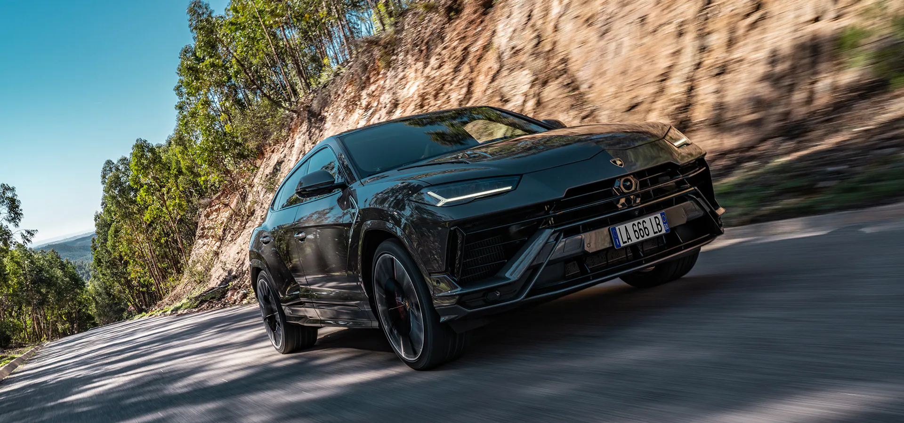

URUS S
FOR BAR RAISERS ONLY
The Urus embodies a visionary concept through the realization
of a Super Sport Utility Vehicle born from pure Lamborghini DNA.
In the Lamborghini Urus S, performance, design and exclusivity are
evolved, revealing even greater strength and a heightened perception
of luxury. Urus S is the most accomplished super SUV, one that combines
maximum capability and comfort on any terrain and road condition.
Get ready to experience an elevated luxury lifestyle in the newest
Lamborghini SSUV.

The design of the Urus S retains the muscular surfaces and confident
lines of the Urus but with even greater sculptural definition to its
shape. Both the front and rear bumpers present a more emphatic design,
along with the new wheel arches and a carbon fiber painted hood. Fine
details include a fresh treatment to the 23” and 22”-inch wheels and a
front steel skid plate that together add a bold and elegant stance to the
exterior. Customers also have the opportunity to choose numerous options
like the carbon fiber roof that further emphasizes the sporting and
luxurious
character of the Urus S.
The interior of the Urus S expresses contemporary sophistication through
its design, offering luxurious comfort with leather surfaces, trim
elements in a variety of finishes and comprehensive high-tech Lamborghini
equipment. In addition, the broad range of Ad Personam options allows you
to appoint this super SUV to reflect your own personal sense of style.
Its state-of-the-art navigation, comfort, safety and entertainment features
are the elements of both onboard and remote connectivity that make driving
your Urus S an unparalleled experience.
